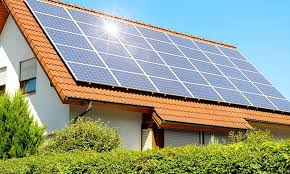

Os painéis solares representam uma fonte de energia limpa e renovável, uma vez que o sol é uma fonte praticamente inesgotável de energia. Eles oferecem uma alternativa sustentável para reduzir a dependência de combustíveis fósseis e diminuir as emissões de gases de efeito estufa, o que ajudaria e muito não só as cidades mas também o planeta. A poluição está exercendo um impacto devastador sobre nós e o nosso planeta, com consequências alarmantes em várias frentes. Em primeiro lugar, a poluição do ar é uma ameaça direta à nossa saúde, causando uma série de problemas respiratórios, cardiovasculares e até mesmo câncer. As partículas finas presentes na poluição do ar podem penetrar nos pulmões e até mesmo na corrente sanguínea, causando danos irreversíveis ao longo do tempo. Além disso, a poluição do ar contribui significativamente para as mudanças climáticas, aumentando as concentrações de gases de efeito estufa na atmosfera. Isso leva ao aquecimento global, resultando em eventos climáticos extremos, como tempestades mais intensas, secas prolongadas e ondas de calor mortais. O aumento das temperaturas também pode desencadear o derretimento das calotas polares e a elevação do nível do mar, ameaçando comunidades costeiras em todo o mundo.
Mas a final o que são e como funiconam os painéis solares?
Os painéis solares são dispositivos projetados para capturar a energia do sol e transformá-la em eletricidade utilizável. Eles contêm células fotovoltaicas, geralmente feitas de silício, que absorvem a luz solar e a convertem diretamente em corrente elétrica. Quando a luz solar atinge essas células, ela estimula a liberação de elétrons, gerando assim uma corrente elétrica. Essa corrente elétrica é então conduzida através de fios para um inversor, que a transforma de corrente contínua para corrente alternada, adequada para uso doméstico e comercial. A eletricidade gerada pelos painéis solares pode ser consumida imediatamente ou armazenada em baterias, assim, podendo ser usada tamabém para uso posterior.
Os painéis solares representam uma solução fundamental para enfrentar os desafios ambientais nas cidades modernas. Ao gerar eletricidade a partir da luz solar, eles oferecem uma fonte de energia limpa e renovável, essencialmente eliminando a necessidade de combustíveis fósseis como carvão e gás natural. Isso não só reduz drasticamente as emissões de gases de efeito estufa, responsáveis pela poluição atmosférica e pelas mudanças climáticas, mas também diminui a emissão de poluentes locais nocivos, comuns em áreas urbanas. Além de serem ambientalmente amigáveis na operação, os painéis solares têm uma pegada de carbono relativamente baixa em comparação com outras formas de energia. Isso contribui para a sustentabilidade global ao longo de seu ciclo de vida. A implementação desses sistemas não apenas fortalece a autonomia energética das cidades, reduzindo a dependência de redes elétricas tradicionais, mas também promove práticas sustentáveis entre residentes e empresas. A adesão à energia solar não só melhora a resiliência urbana contra interrupções de energia, como também beneficia a saúde pública ao reduzir a poluição do ar, o que está ligado a uma série de problemas de saúde. Em última análise, os painéis solares não são apenas uma tecnologia de energia alternativa, mas uma ferramenta essencial para criar cidades mais limpas, sustentáveis e habitáveis para todos.